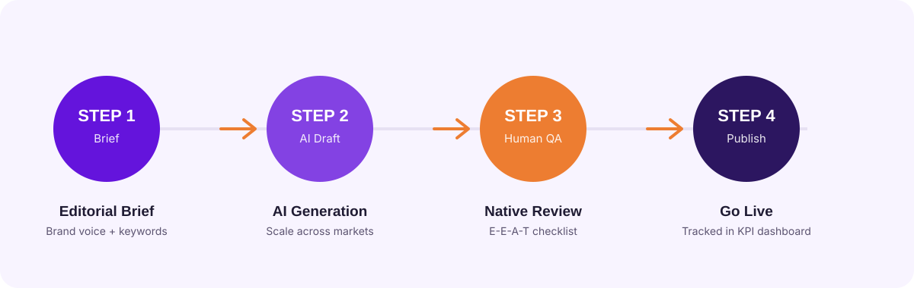
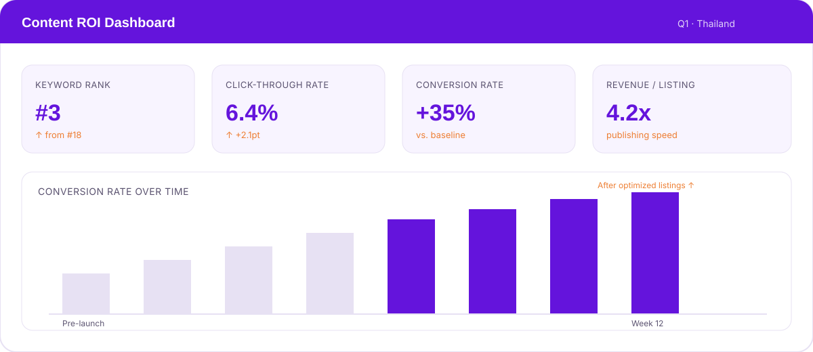

This is not another high-level strategy guide. This is a single, practical playbook for Japanese consumer brands that provides a complete content generator for SEO. It combines market-by-market keyword packs, plug-and-play marketplace listing templates, and an enterprise-grade AI+human transcreation workflow. You will learn how to rapidly publish high-quality SEO assets across Southeast Asia, track real ROI with ready-to-use KPI dashboards, and finally build the infrastructure for your brand to grow overseas. 本記事は、また一つの抽象的な戦略ガイドではありません。日本の消費者ブランドのために、SEOのための完全な「コンテンツジェネレーター」を提供する、実践的な単一のプレイブックです。市場別のキーワードパック、そのまま使えるマーケットプレイス出品テンプレート、そしてエンタープライズグレードのAI+人間によるトランスクリエーション・ワークフローを組み合わせています。東南アジア全域で質の高いSEOアセットを迅速に公開する方法、すぐに使えるKPIダッシュボードで実際のROIを追跡する方法、そしてブランドが海外で成長するためのインフラを構築する方法を学べます。
Why Scaling Content in Southeast Asia is Broken (And How to Fix It) なぜ東南アジアでのコンテンツ拡大はうまくいかないのか（そしてその解決策）
For many brands, the path to launching in Southeast Asia is paved with operational bottlenecks. Traditional, manual localization methods — relying on disconnected freelancers or agencies working on a per-project basis — are too slow, expensive, and inconsistent for the pace of e-commerce in Southeast Asia. This fragmented approach leads to inconsistent brand messaging, slow time-to-market for new products, and an inability to adapt to rapidly changing consumer trends on platforms like Shopee and Lazada. 多くのブランドにとって、東南アジアでのローンチへの道は、オペレーション上のボトルネックだらけです。案件ごとに動く、バラバラなフリーランサーや代理店に依存する従来の手動ローカライゼーション手法は、東南アジアのEコマースのスピードに対して、遅すぎ、コストが高すぎ、そして一貫性を欠きます。この断片的なアプローチは、ブランドメッセージの不整合、新商品の市場投入の遅れ、そしてShopeeやLazadaのようなプラットフォーム上で急速に変化する消費者トレンドへの対応力の欠如を招きます。
The result is a missed opportunity of staggering proportions. The digital economy in this region is booming, with tens of millions of new users coming online every year. For Japanese consumer brands, cracking the localization and transcreation code is the key to unlocking the immense potential of the Southeast Asia e-commerce market. その結果、計り知れないほどの機会損失が生まれています。この地域のデジタル経済は急成長しており、毎年数千万人規模の新規ユーザーがオンラインに参入しています。日本の消費者ブランドにとって、ローカライゼーションとトランスクリエーションのコードを解き明かすことこそが、東南アジアEコマース市場の巨大な可能性を解き放つ鍵となります。
The challenge isn't a lack of desire, but a lack of a scalable system. This is where we must shift our thinking from one-off projects to building a new operational model: a "content generator." This engine combines intelligent automation with expert human oversight to produce high-quality, localized content at scale. It's a system designed for speed, consistency, and measurement, allowing your brand to finally match the velocity of the market you aim to capture. 課題は意欲の欠如ではなく、スケール可能な仕組みの欠如にあります。ここで私たちは、単発のプロジェクトという発想から、新しいオペレーションモデル——「コンテンツジェネレーター」の構築へと発想を転換する必要があります。このエンジンは、インテリジェントな自動化と、専門家による人的チェックを組み合わせ、質の高いローカライズドコンテンツをスケールして生み出します。スピード、一貫性、そして測定可能性のために設計されたこの仕組みによって、ブランドは狙う市場のスピードにようやく追いつくことができます。
The "Marketplace-First" SEO Blueprint: From Keywords to Listings 「マーケットプレイス・ファースト」のSEO設計図：キーワードから出品まで
Success in Southeast Asia's e-commerce ecosystem is won on the digital shelf. This means your SEO strategy must be "marketplace-first," optimized not just for Google, but for the internal search algorithms of the region's dominant platforms. This section provides the tactical assets to build a discoverable and persuasive presence, moving from foundational research to flawless on-platform execution. 東南アジアのEコマースエコシステムにおける成功は、「デジタル棚」の上で決まります。つまり、SEO戦略はGoogleだけでなく、この地域を代表するプラットフォームの内部検索アルゴリズムにも最適化された「マーケットプレイス・ファースト」でなければなりません。本セクションでは、基礎的なリサーチから、プラットフォーム上での完璧な実行まで、見つけてもらえて、かつ購買意欲を高める存在になるための実践的なアセットを紹介します。
Beyond Translation: Localized Keyword Packs for Every SEA Market 翻訳を超えて：東南アジア各市場のためのローカライズドキーワードパック
The single biggest mistake brands make is directly translating their Japanese keywords into Thai, Bahasa Indonesia, or Malay. This approach fails because it ignores the profound differences in how local consumers search. They use different slang, product feature terminology, and question formats. A direct translation of "moisturizing lotion" might completely miss the high-volume local term for "dewy skin serum." To succeed, you must uncover what local customers are actually searching for. ブランドが陥る最大の過ちは、日本語のキーワードをそのままタイ語、インドネシア語（バハサ）、マレー語に翻訳してしまうことです。このアプローチが失敗するのは、現地消費者の検索方法における根本的な違いを見落としているからです。現地では異なるスラング、商品特徴の表現、質問の形式が使われます。「保湿ローション」の直訳では、「うるツヤ美容液」のような検索ボリュームの高い現地語表現を完全に取りこぼしてしまうかもしれません。成功のためには、現地の顧客が実際に何を検索しているのかを突き止める必要があります。
Effective marketplace SEO requires more than just translation; it demands deep localization based on cultural nuances and local search behavior on platforms like Shopee, Lazada, and Tokopedia. Our downloadable, market-specific keyword packs are your shortcut. Segmented by user intent (e.g., problem-aware, solution-seeking, brand-specific), these packs for Indonesia, Malaysia, Thailand, and other markets give you the exact phrases real shoppers are using. This approach aligns with fundamental SEO best practices outlined in Google guidance on multilingual and multi-regional sites, ensuring your strategy is built on a solid, technically sound foundation. 効果的なマーケットプレイスSEOには、単なる翻訳以上のものが求められます。Shopee、Lazada、Tokopediaといったプラットフォーム上での文化的なニュアンスや現地の検索行動に基づいた、深いローカライゼーションが必要です。市場別に用意されたキーワードパックが、その近道になります。ユーザーインテント（課題認識段階、解決策検索段階、ブランド指名検索など）別にセグメント化されたこれらのパックは、インドネシア、マレーシア、タイなどの市場で、実際の購入者が使っているフレーズをそのまま提供します。このアプローチは、Googleの多言語・多地域サイトに関するガイダンスに示された基本的なSEOベストプラクティスに沿ったものであり、戦略が技術的にも堅実な基盤の上に成り立つことを保証します。
Plug-and-Play Listing Templates for Shopee, Lazada, & Tokopedia Shopee・Lazada・Tokopedia向け、そのまま使える出品テンプレート
Once you have the right keywords, you need to structure your product pages for maximum impact. Each marketplace has a unique algorithm, user interface, and set of best practices. A generic product description copied and pasted across platforms will underperform everywhere. 適切なキーワードが揃ったら、次はその効果を最大化するように商品ページを構成する必要があります。各マーケットプレイスには、それぞれ独自のアルゴリズム、ユーザーインターフェース、ベストプラクティスが存在します。プラットフォーム間でコピー&ペーストしただけの汎用的な商品説明文では、どこでも十分な成果は出せません。
Imagine a "before" scenario: a single block of text translated from Japanese, with a generic title. It's hard to read on a mobile device and fails to highlight the key benefits that a local shopper cares about. Now, picture the "after": a listing built using a platform-specific template. The title includes the top-volume keyword. The description uses bullet points and emojis to call out key features. A localized infographic visually explains the product's benefits. This optimized listing is not only more discoverable by the platform's search algorithm but is also dramatically more persuasive to a human shopper. 「導入前」のシナリオを想像してみてください。日本語から翻訳された一塊のテキストと、汎用的なタイトル。モバイル端末では読みづらく、現地の購入者が気にする重要なベネフィットも訴求できていません。一方「導入後」は、プラットフォームごとのテンプレートを使って構成されたリスティングです。タイトルには検索ボリュームの高いキーワードが含まれ、説明文には箇条書きと絵文字で主要な特徴が示され、ローカライズされたインフォグラフィックが商品のベネフィットを視覚的に伝えます。この最適化されたリスティングは、プラットフォームの検索アルゴリズムに見つけてもらいやすいだけでなく、実際の購入者に対してもはるかに説得力を持ちます。
To make this scalable, use our plug-and-play templates to optimize your product listings for Shopee, Lazada, and Tokopedia, ensuring your content operations are both scalable and effective. These templates incorporate the latest platform rules and user behavior trends, giving you a proven format for success. For detailed guidance straight from the source, it's always wise to consult resources like the official Shopee seller help and listing guidelines. これをスケールさせるために、そのまま使えるテンプレートを活用してShopee・Lazada・Tokopedia向けの商品リスティングを最適化し、コンテンツオペレーションのスケーラビリティと実効性の両立を図りましょう。これらのテンプレートには最新のプラットフォームルールとユーザー行動トレンドが反映されており、実証済みの成功フォーマットを提供します。詳細なガイダンスについては、Shopeeの公式セラーヘルプおよび出品ガイドラインなど、一次情報源も併せて確認することをお勧めします。
The AI+Human Transcreation Workflow: Scaling Content Without Losing Your Brand AI+人間によるトランスクリエーション・ワークフロー：ブランドを失わずにコンテンツをスケールする
The greatest fear in scaling content is losing the soul of your brand. How do you produce thousands of assets across multiple languages without sounding generic, robotic, or culturally tone-deaf? The answer lies in a meticulously designed workflow that pairs the scale of artificial intelligence with the nuance and quality assurance of human experts. コンテンツをスケールさせる際の最大の懸念は、ブランドの魂を失うことです。複数言語にわたって何千ものアセットを制作しながら、いかにして没個性的・機械的・文化的に的外れな表現を避けるか。その答えは、AIのスケーラビリティと、人間の専門家によるニュアンスと品質保証を組み合わせた、綿密に設計されたワークフローにあります。

Step 1: The Engine — Automated Editorial Briefs to Protect Brand Voice ステップ1：エンジン——ブランドボイスを守る自動編集ブリーフ
The quality of AI-generated content is determined by the quality of the instructions it receives. Instead of using generic prompts, this workflow begins with a structured editorial brief. Using our templates, you define your brand's core attributes: its tone of voice (e.g., "expert and clinical," "playful and youthful"), core messaging pillars, un-translatable brand terms, and a list of "do's and don'ts." This brief becomes the master instruction set. AI生成コンテンツの品質は、与える指示の質によって決まります。汎用的なプロンプトを使う代わりに、このワークフローは構造化された編集ブリーフから始まります。テンプレートを使って、ブランドのトーン・オブ・ボイス（例：「専門的で臨床的」「遊び心があり若々しい」）、コアメッセージの柱、翻訳してはいけないブランド用語、そして「すべきこと・すべきでないこと」のリストといった、ブランドの中核的な特性を定義します。このブリーフが、マスター指示セットとなります。
Using specific prompts, you can programmatically combine this brand DNA with product details and target keywords to generate a perfect, structured brief for every single asset. Whether for a product description, a social media caption, or an email, the AI receives a crystal-clear directive. This AI + human workflow for transcreation is designed to preserve your unique Japanese brand voice while culturally adapting copy for diverse SEA languages, ensuring consistency and quality at scale. 特定のプロンプトを用いることで、このブランドDNAを商品詳細やターゲットキーワードとプログラム的に組み合わせ、アセットごとに完璧で構造化されたブリーフを生成できます。商品説明文であれ、SNSのキャプションであれ、メールであれ、AIは極めて明確な指示を受け取ります。このAI+人間によるトランスクリエーション・ワークフローは、日本ブランド独自のボイスを保持しながら、多様な東南アジアの言語に文化的に適応したコピーを生み出すよう設計されており、スケールしても一貫性と品質を確保します。
Step 2: The Safeguard — Human-in-the-Loop QA and E-E-A-T Checks ステップ2：セーフガード——人間参加型QAとE-E-A-Tチェック
AI is the engine, but human experts are the safeguard. No AI-generated content should ever go live without a rigorous quality assurance check by a native-language specialist. This "human-in-the-loop" is not just a proofreader; they are a brand guardian. AIはエンジンですが、それを守るのは人間の専門家です。AIが生成したコンテンツは、ネイティブ言語の専門家による厳密な品質保証チェックを経ずに公開されるべきではありません。この「人間参加型（human-in-the-loop）」の専門家は、単なる校正者ではなく、ブランドの守護者です。
Our QA process is guided by a downloadable EEAT (Experience, Expertise, Authoritativeness, Trust) checklist. The reviewer assesses the draft for: 私たちのQAプロセスは、ダウンロード可能なEEAT（経験・専門性・権威性・信頼性）チェックリストに基づいて進められます。レビュアーは以下の観点で原稿を評価します：
- Cultural Relevance: Does the copy resonate with local customs and values?文化的関連性：コピーは現地の慣習や価値観に響く内容か
- Factual Accuracy: Are all product claims correct and verifiable?事実の正確性：商品に関する記載はすべて正確で検証可能か
- Brand Alignment: Does it sound like your brand?ブランド適合性：ブランドらしい表現になっているか
- SEO Optimization: Are keywords integrated naturally?SEO最適化：キーワードは自然に組み込まれているか
- Clarity and Flow: Is it persuasive and easy to read?明瞭さと流れ：説得力があり、読みやすいか
This critical step ensures your AI-assisted localization efforts meet the highest standards of quality and avoid the pitfalls of robotic-sounding content. By building a workflow with clear human oversight, you align with principles from the Ethics guidelines for trustworthy AI from the European Commission, creating a responsible and effective system. Furthermore, following technical standards like the W3C internationalization best practices ensures your content is structured correctly for every market. この重要なステップにより、AIを活用したローカライゼーションの取り組みが最高水準の品質を満たし、機械的に聞こえるコンテンツという落とし穴を回避できます。明確な人的チェック体制を組み込んだワークフローを構築することで、欧州委員会による「信頼できるAIのための倫理ガイドライン」の原則にも沿った、責任ある効果的な仕組みが実現します。さらに、W3Cの国際化ベストプラクティスのような技術標準に従うことで、コンテンツがすべての市場に対して正しく構造化されることが保証されます。
From Our Playbook: A Japan→SEA Case Study プレイブック事例：日本→東南アジア ケーススタディ
Theory is one thing; results are another. Consider the journey of a Japanese skincare brand that was struggling to gain traction in Thailand and Indonesia. Their "before" state was defined by a slow time-to-market, with new product listings taking over a month to go live. Their listings were inconsistent, using poorly translated copy that failed to connect with local consumers, resulting in low traffic and conversion rates. 理論と成果は別物です。タイとインドネシアで苦戦していた、ある日本のスキンケアブランドの事例を見てみましょう。「導入前」の状態は、市場投入までのスピードの遅さが特徴でした。新商品のリスティング公開までに1ヶ月以上を要し、リスティングには質の低い翻訳コピーが使われ、現地消費者に響かず、トラフィックとコンバージョン率はともに低迷していました。
By implementing this playbook, their "after" state was transformative. Using the AI+human workflow and marketplace-specific templates, they were able to publish fully optimized listings 4x faster. The localized content, informed by our keyword packs, resonated with shoppers. The result was a +35% conversion lift on their optimized listings within the first quarter. See how our full-stack bundle for Japanese brands helped them successfully scale globally and achieve significant SEO impact. このプレイブックを導入したことで、「導入後」の状態は一変しました。AI+人間のワークフローとマーケットプレイス別テンプレートを活用することで、完全に最適化されたリスティングを4倍速く公開できるようになりました。キーワードパックに基づいたローカライズドコンテンツは、購入者の共感を呼びました。結果として、最初の四半期で最適化リスティングのコンバージョン率は+35%向上しました。日本ブランド向けのフルスタック・バンドルが、グローバルへのスケールと大きなSEOインパクトの実現をどのように後押ししたか、ぜひご覧ください。
Advanced Strategy: Building a Content ROI Dashboard to Prove Impact 応用戦略：インパクトを証明するコンテンツROIダッシュボードの構築
One of the biggest challenges for marketing leaders is proving the value of content. How do you connect the effort of localizing a product description to a tangible increase in revenue? The solution is to build a dedicated system for measurement and attribution that ties your content operations directly to business outcomes. マーケティングリーダーにとって最大の課題の一つが、コンテンツの価値を証明することです。商品説明文をローカライズする労力を、実際の売上増加にどう結びつけるのか。その解決策は、コンテンツオペレーションを事業成果に直接結びつける、専用の測定・アトリビューション（貢献度分析）の仕組みを構築することです。

Measuring What Matters: KPIs for a Marketplace SEO Content Generator 本当に重要な指標を測る：マーケットプレイスSEOコンテンツジェネレーターのためのKPI
Vanity metrics like page views are not enough. You need to focus on KPIs that demonstrate the true performance of your content engine. Go beyond basic traffic to track meaningful measurement and attribution KPIs that prove the SEO impact and ROI of your generated content. ページビューのような見栄えだけの指標では不十分です。コンテンツエンジンの真のパフォーマンスを示すKPIに焦点を当てる必要があります。基本的なトラフィックにとどまらず、生成したコンテンツのSEOインパクトとROIを証明する、意味のある測定・アトリビューションKPIを追跡しましょう。
Key KPIs include: 主要KPIは以下の通りです：
- Keyword Ranking Improvements: Are your products ranking higher for target keywords on marketplace search results pages?キーワード順位の改善：マーケットプレイスの検索結果ページで、ターゲットキーワードにおける商品の順位は上昇しているか
- Click-Through Rate (CTR) from Search: Is your optimized title and thumbnail attracting more clicks?検索からのクリック率（CTR）：最適化されたタイトルとサムネイルは、より多くのクリックを獲得できているか
- Conversion Rate: Are optimized listings turning more browsers into buyers?コンバージョン率：最適化されたリスティングは、閲覧者をより多く購入者に変えられているか
- Cost-Per-Asset: How much does it cost to produce one high-quality, localized listing? (This should decrease over time as your engine becomes more efficient.)アセット単価：質の高いローカライズドリスティングを1件制作するのにかかるコストはいくらか（エンジンの効率が上がるにつれ、これは時間とともに低下するはずです）
- Revenue Per Optimized Listing: The ultimate measure of impact.最適化リスティングあたりの売上：インパクトを測る最終指標
Your Ready-to-Use KPI Dashboard Template すぐに使えるKPIダッシュボードテンプレート
To bring this data together, we've developed a downloadable KPI dashboard template. This dashboard serves as your single source of truth for content performance. By connecting it to data sources like the seller centers of Shopee and Lazada, as well as your web analytics, you can visualize your progress in real-time. これらのデータを一元管理するために、ダウンロード可能なKPIダッシュボードテンプレートを開発しました。このダッシュボードは、コンテンツパフォーマンスに関する唯一の信頼できる情報源（single source of truth）として機能します。ShopeeやLazadaのセラーセンターのようなデータソースや、ウェブ解析ツールと連携させることで、進捗をリアルタイムで可視化できます。
This KPI dashboard template provides a framework for testing and proving the business impact of your SEO content generator. You can A/B test different headline variations or image styles and see the impact on conversion rate directly in your dashboard. For guidance on setting up the necessary tracking, refer to the official Google Analytics 4 measurement and setup guide. このKPIダッシュボードテンプレートは、SEOコンテンツジェネレーターの事業インパクトを検証・証明するためのフレームワークを提供します。異なる見出しのバリエーションや画像スタイルをA/Bテストし、コンバージョン率への影響をダッシュボード上で直接確認することができます。必要なトラッキングの設定方法については、Googleアナリティクス4の公式測定・設定ガイドを参照してください。
Conclusion & Your 30-Day Action Plan 結論と30日間アクションプラン
To win in Southeast Asia, Japanese brands need more than a strategy; they need a scalable, measurable content operating system. Traditional methods are too slow and disconnected to compete effectively. This playbook provides the engine for that system — a content generator that empowers you to publish high-quality, localized assets at speed while maintaining brand integrity and proving your ROI. 東南アジアで勝つために、日本ブランドに必要なのは戦略だけではなく、スケール可能で測定可能なコンテンツ・オペレーティングシステムです。従来の手法は、効果的に競争するには遅すぎ、分断されすぎています。このプレイブックは、その仕組みのエンジン——ブランドの一貫性を保ちながら、質の高いローカライズドアセットをスピーディーに公開し、ROIを証明できる「コンテンツジェネレーター」を提供します。
Here is your 30-day action plan to get started: 以下が、始めるための30日間アクションプランです：
- Week 1: Download the keyword packs and choose one target market (e.g., Thailand) and one platform (e.g., Shopee) for a pilot test.第1週：キーワードパックをダウンロードし、パイロットテストのためのターゲット市場（例：タイ）とプラットフォーム（例：Shopee）を1つずつ選定する
- Weeks 2–3: Use the plug-and-play listing templates and the AI+human workflow to transcreate and optimize the listings for your top 5 products.第2〜3週：そのまま使える出品テンプレートとAI+人間のワークフローを使い、主力商品5点のリスティングをトランスクリエーション・最適化する
- Week 4: Launch your optimized listings and set up the KPI dashboard to track performance from day one, measuring keyword rank, traffic, and conversion rate against your previous benchmarks.第4週：最適化したリスティングを公開し、初日からパフォーマンスを追跡できるようKPIダッシュボードを設定。キーワード順位・トラフィック・コンバージョン率を、従来のベンチマークと比較して測定する
E-E-A-T Note & FAQ E-E-A-Tに関する注記とFAQ
This playbook was developed by the cross-border e-commerce specialists at BridgeBee Global, the operating system that takes Japanese consumer brands from 0 to 1 in Southeast Asia, leveraging proprietary data and native-language expertise. 本プレイブックは、東南アジアにおいて日本の消費者ブランドを0から1へと導くオペレーティングシステムであるBridgeBee Globalの越境Eコマース専門チームが、独自のデータとネイティブ言語の専門知識を活かして作成しました。